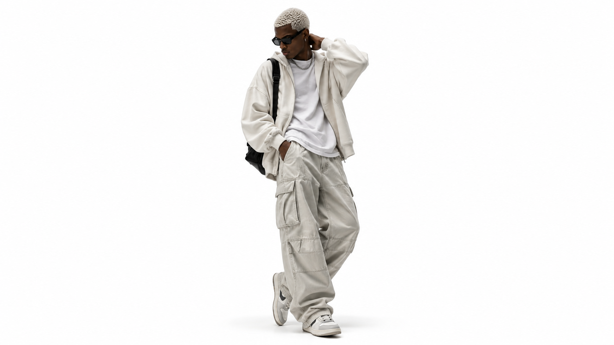
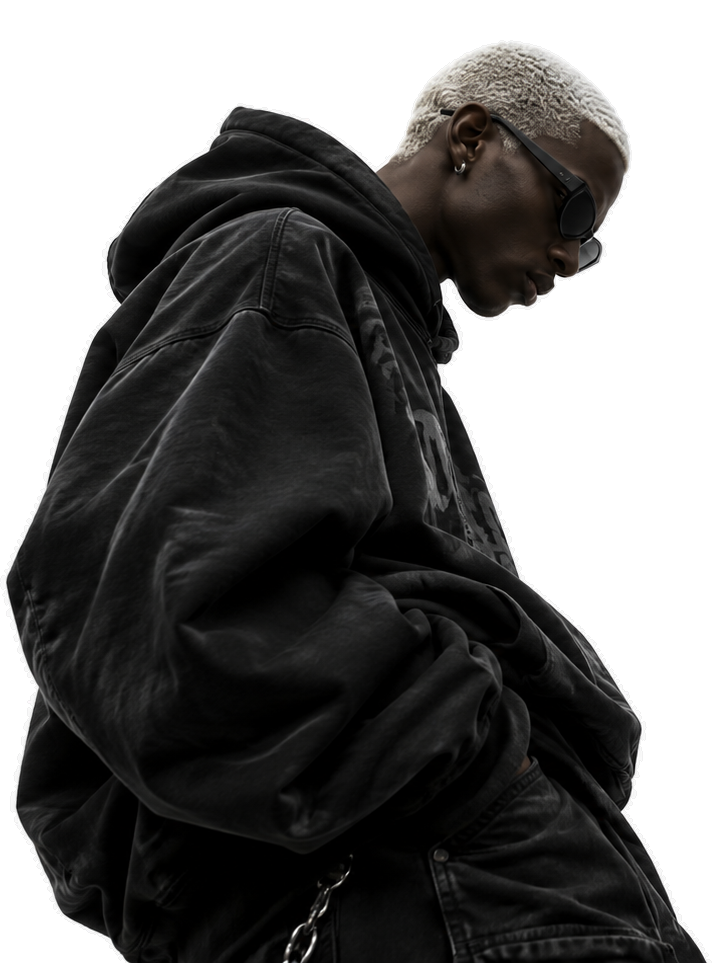
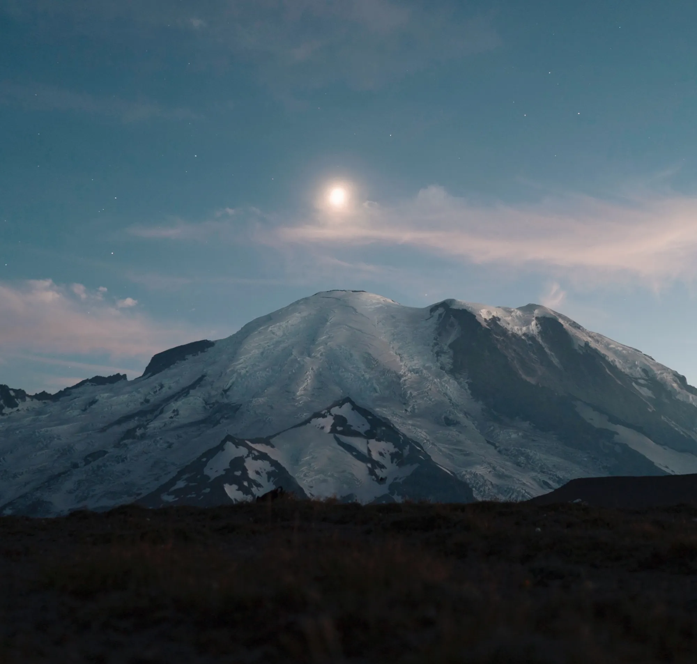
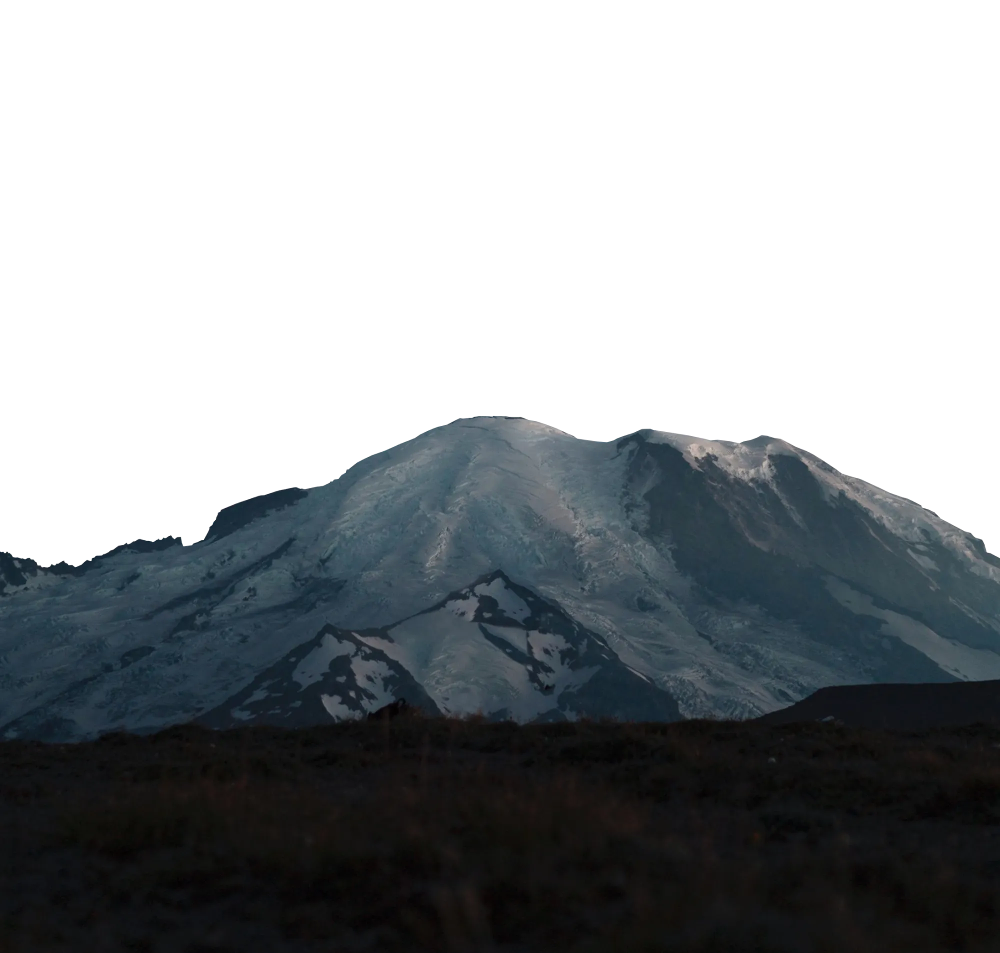
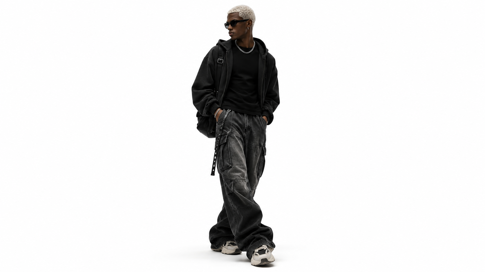
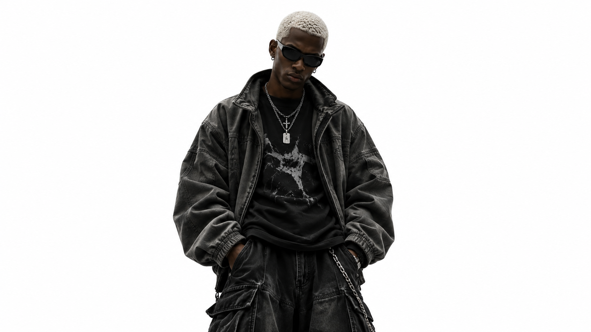
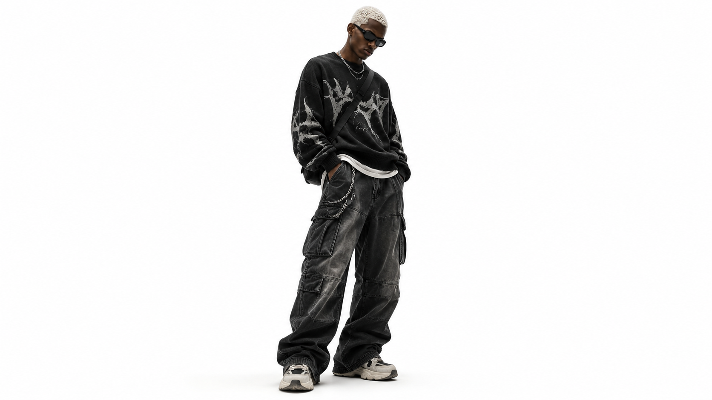

01 — 04
Relaxed stance with three-quarter turn
Studio neutral lighting • tailored poise




Relaxed stance with three-quarter turn
Studio neutral lighting • tailored poise
Full-length, straight-on studio pose
Poised direct gaze • architectural form
Poised standing composition in tailored styling
Layered volume • platinum hair texture
Full-body pose framed by generous negative space
High-street silhouette • minimalist stance